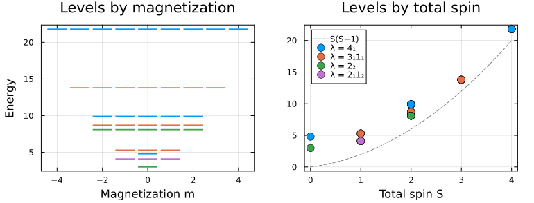

Spin chains
In this example, we build Heisenberg spin chains and show how to exploit conserved quantities and permutation symmetry (invariance under exchanging sites) to block-diagonalize the Hamiltonian.
using FermionicHilbertSpacesusing LinearAlgebraSpin algebra
Declare a spin mode and index into to get symbolic spin operators
@spin SS[:x] * S[:y] - S[:y] * S[:x] == 1im * S[:z]; #trueAllowed operator arguments are the spin components :x, :y, :z and the ladder operators :+, :-, and identity :I. There are operator aliases, so e.g. S[1] == S[:x] == S[:X]. The spin basis defined here has no fixed spin value. We can define an operator with a specific total spin which has more algebraic structure.
@spin Shalf 1//2@spin Sone 1Shalf[:x]^2 == 1//4sum(s^2 for s in Sone[:]) == 2truewhere Sone[:] gives a vector of the spin operators [Sone[:x], Sone[:y], Sone[:z]].
For spin half, expressions are simplified to a unique expression, but for higher spins this is not necessarily the case. One should be careful when comparing different algebraic expressions.
Spin hilbert spaces can be constructed by
Hhalf = hilbert_space(Shalf)Hone = hilbert_space(Sone)Hten = hilbert_space(S, 10)21-dimensional Spin{10}(S)When dealing with multiple spins it is convenient to define a spin field which gives spin basis when indexing
@spins SS[1][:+] # spin + operator on the site labeled 1S[1][:+]A hilbert space for this field is obtained by hilbert_space(S, labels, spin)
Basic example: Heisenberg chain
A spin-1/2 Heisenberg chain hamiltonian can then be constructed as
N = 4@spins S 1 // 2H = hilbert_space(S, 1:N)ham = sum(S[k][:]'S[k+1][:] for k in 1:(N-1))M = representation(ham, H)16×16 SparseArrays.SparseMatrixCSC{ComplexF64, Int64} with 40 stored entries:
⎡⠱⢆⢄⠀⠀⠀⠀⠀⎤
⎢⠀⠑⠱⢆⠑⢄⠀⠀⎥
⎢⠀⠀⠑⢄⠱⢆⢄⠀⎥
⎣⠀⠀⠀⠀⠀⠑⠱⢆⎦We can exploit the fact that this hamiltonian conserves the total magnetization by
using FermionicHilbertSpaces: AdditiveConstraintconstraint = AdditiveConstraint(1; maps=s -> s.m)H = hilbert_space(S, 1:N, constraint)M = representation(ham, H)4×4 SparseArrays.SparseMatrixCSC{ComplexF64, Int64} with 10 stored entries:
0.25+0.0im 0.5+0.0im ⋅ ⋅
0.5+0.0im -0.25+0.0im 0.5+0.0im ⋅
⋅ 0.5+0.0im -0.25+0.0im 0.5+0.0im
⋅ ⋅ 0.5+0.0im 0.25+0.0imAdvanced example: Conserving total spin, permutation symmetry
We are not restricted to spin-1/2, but can use any spin J. On the symbolic level, we can also omit the spin value, and supply it later when we build the Hilbert space.
@spins SJ = 1N = 4H = hilbert_space(S, 1:N, J)81-dimensional ProductSpace: 3×3×3×3)
Spin{1}(S[1]) ⨯ Spin{1}(S[2]) ⨯ Spin{1}(S[3]) ⨯ Spin{1}(S[4])Let's make a permutationally invariant hamiltonian. The all-to-all Heisenberg term $\sum_{i,j} \vec{S}_i\cdot\vec{S}_j$ is just $\vec{S}_\mathrm{tot}^2$, so on its own it would be a multiple of the identity in every total-spin block. For spin 1 we therefore add an all-to-all biquadratic term $K\sum_{i<j} (\vec{S}_i\cdot\vec{S}_j)^2$, which keeps the symmetries but is not a function of $\vec{S}_\mathrm{tot}^2$.
K = 0.3ham = sum(S[i][op] * S[j][op] for i in 1:N, j in 1:N, op in (:x, :y, :z)) + K * sum(sum(S[i][op] * S[j][op] for op in (:x, :y, :z))^2 for i in 1:N for j in (i+1):N)Sum with 102 terms:
-0.15*S[1][:+]*S[1][:-]*S[2][:z]-0.15*S[1][:+]*S[1][:-]*S[3][:z]-0.15*S[1][:+]*S[1][:-]*S[4][:z] + ...This hamiltonian conserves the total magnetization, the total spin, and is invariant under any permutation of the sites. Let's exploit all these symmetries.
Fixing the total magnetization
AdditiveConstraint restricts the Hilbert space to states where the sum of a per-site quantity, here the magnetization s.m, equals a fixed value.
constraint = AdditiveConstraint(1; maps=s -> s.m)H = hilbert_space(S, 1:N, J, constraint)16-dimensional SectorHilbertSpace
Parent: ProductSpace(81-dim, 4 factors)
Sectors: [1 (16-dim)]Full decomposition into irreducible representations
More generally, every irreducible representation of $S_N$ gives a symmetry sector. AbstractAlgebra.jl provides the character tables needed to build the corresponding projectors: each integer partition λ of N labels an irrep with character χ, and symmetric_sector accepts the permutations and their weights (perms, weights) = (G, χ.(G)) directly instead of the :symmetric/:antisymmetric shorthand.
import AbstractAlgebraG = collect(AbstractAlgebra.SymmetricGroup(N))perms = Iterators.map(p -> p.d, G)weights = Vector{Int}(undef, length(perms))partitions = AbstractAlgebra.Generic.partitions(N)projectors = map(partitions) do λ χ = AbstractAlgebra.character(λ) map!(Int ∘ χ, weights, G) symmetric_sector(H, factors(H), (perms, weights))endM = representation(ham, H)map(partitions, projectors) do λ, p λ => size(p' * M * p)end5-element Vector{Pair{AbstractAlgebra.Generic.Partition{Int64}, Tuple{Int64, Int64}}}:
1₄ => (0, 0)
2₁1₂ => (3, 3)
3₁1₁ => (9, 9)
2₂ => (2, 2)
4₁ => (2, 2)Each projector block-diagonalizes M into the corresponding symmetry sector.
Total spin Casimir
We can also project onto a fixed total spin using the Casimir operator $\vec{S}^2$. For example, the nullspace of $\vec{S}^2 - S(S+1)$ with $S=1$ gives the total-spin-1 sector.
total_spin_op = sum(sum(S[k][op] for k in 1:N)^2 for op in (:x, :y, :z))total_spin_mat = representation(total_spin_op, H)P = nullspace(Matrix(total_spin_mat - 2 * I))P' * M * P6×6 Matrix{ComplexF64}:
4.17234+0.0im -0.112148+0.0im … 0.0502736+0.0im -0.192143+0.0im
-0.112148+0.0im 4.71649+0.0im 0.21869+0.0im -0.0416802+0.0im
0.0592843+0.0im 0.144374+0.0im -0.25272+0.0im -0.127984+0.0im
0.161364+0.0im -0.526065+0.0im -0.097266+0.0im -0.20552+0.0im
0.0502736+0.0im 0.21869+0.0im 4.55379+0.0im -0.463618+0.0im
-0.192143+0.0im -0.0416802+0.0im … -0.463618+0.0im 4.91859+0.0imFully decomposed space
Let's find the ground state energy in each block of total spin, magnetization and permutation symmetry sector. Each block's full spectrum is kept as well, and for every magnetization the blocks together must reproduce the spectrum of the whole sector.
magnetizations = (-N*J):(N*J)energies = mapreduce(vcat, magnetizations) do m magcons = AdditiveConstraint(m; maps=s -> s.m) H = hilbert_space(S, 1:N, J, magcons) total_spin_mat = representation(total_spin_op, H) ham_mat = representation(ham, H) blocks = mapreduce(vcat, partitions) do λ χ = AbstractAlgebra.character(λ) map!(Int ∘ χ, weights, G) p = symmetric_sector(H, factors(H), (perms, weights)) block = Matrix(p'*total_spin_mat*p) Mblock = p'*ham_mat*p casimirs = unique!(map(s -> round(Int, 4s)//4, eigvals(block))) map(casimirs) do s P = nullspace(block - s*I; atol=1e-1) spectrum = eigvals(Hermitian(P' * Mblock * P)) S_tot = (sqrt(1 + 4s) - 1) / 2 (λ, S_tot, m) => (energy=first(spectrum), spectrum=spectrum) end end block_spectra = sort(reduce(vcat, [b.second.spectrum for b in blocks])) @assert block_spectra ≈ eigvals(Hermitian(Matrix(ham_mat))) blocksendsort(energies; by=b -> b.second.energy)39-element Vector{Pair{Tuple{AbstractAlgebra.Generic.Partition{Int64}, Float64, Int64}, @NamedTuple{energy::Float64, spectrum::Vector{Float64}}}}:
(2₂, 0.0, 0) => (energy = 3.000000000000001, spectrum = [3.000000000000001, 3.0000000000000018])
(2₁1₂, 1.0, -1) => (energy = 4.1, spectrum = [4.1, 4.1, 4.100000000000005])
(2₁1₂, 1.0, 0) => (energy = 4.1, spectrum = [4.1, 4.1000000000000005, 4.100000000000003])
(2₁1₂, 1.0, 1) => (energy = 4.100000000000001, spectrum = [4.100000000000001, 4.100000000000002, 4.100000000000003])
(4₁, 0.0, 0) => (energy = 4.8000000000000025, spectrum = [4.8000000000000025])
(3₁1₁, 1.0, 0) => (energy = 5.299999999999996, spectrum = [5.299999999999996, 5.299999999999996, 5.300000000000001])
(3₁1₁, 1.0, -1) => (energy = 5.299999999999998, spectrum = [5.299999999999998, 5.300000000000001, 5.300000000000007])
(3₁1₁, 1.0, 1) => (energy = 5.299999999999999, spectrum = [5.299999999999999, 5.300000000000004, 5.3000000000000105])
(2₂, 2.0, 2) => (energy = 8.099999999999998, spectrum = [8.099999999999998, 8.100000000000001])
(2₂, 2.0, -2) => (energy = 8.1, spectrum = [8.1, 8.100000000000001])
⋮
(4₁, 4.0, -3) => (energy = 21.8, spectrum = [21.8])
(4₁, 4.0, 3) => (energy = 21.8, spectrum = [21.8])
(4₁, 4.0, 4) => (energy = 21.8, spectrum = [21.8])
(4₁, 4.0, -4) => (energy = 21.800000000000004, spectrum = [21.800000000000004])
(4₁, 4.0, -2) => (energy = 21.800000000000008, spectrum = [21.800000000000008])
(4₁, 4.0, 0) => (energy = 21.800000000000008, spectrum = [21.800000000000008])
(4₁, 4.0, 1) => (energy = 21.800000000000008, spectrum = [21.800000000000008])
(4₁, 4.0, 2) => (energy = 21.800000000000008, spectrum = [21.800000000000008])
(4₁, 4.0, -1) => (energy = 21.80000000000001, spectrum = [21.80000000000001])Plotting the spectrum
Each block is a multiplet of total spin $S$, so its energy appears at every magnetization $m = -S, \dots, S$. Coloring the levels by permutation sector λ shows that the energy depends on the $S_N$ irrep and not only on $S$. The dashed curve $S(S+1)$ is the spectrum without the biquadratic term.
using Plotsirreps = unique(b.first[1] for b in energies)p1 = plot(xlabel="Magnetization m", ylabel="Energy", title="Levels by magnetization", xlims=(-N * J - 0.7, N * J + 0.7), legend=false)p2 = plot(xlabel="Total spin S", title="Levels by total spin", legend=:topleft)plot!(p2, range(0, N * J, 100), S -> S * (S + 1); ls=:dash, c=:gray, label="S(S+1)")for (n, λ) in enumerate(irreps) sector = filter(b -> b.first[1] == λ, energies) ms = [b.first[3] for b in sector] Ss = [b.first[2] for b in sector] Es = [b.second.energy for b in sector] scatter!(p1, ms, Es; marker=:hline, ms=14, msw=3, c=n, msc=n) scatter!(p2, Ss, Es; ms=6, c=n, label="λ = $λ")endplot(p1, p2; layout=(1, 2), size=0.7 .* (1100, 420), frame=:box, margins=4Plots.mm)
This page was generated using Literate.jl.